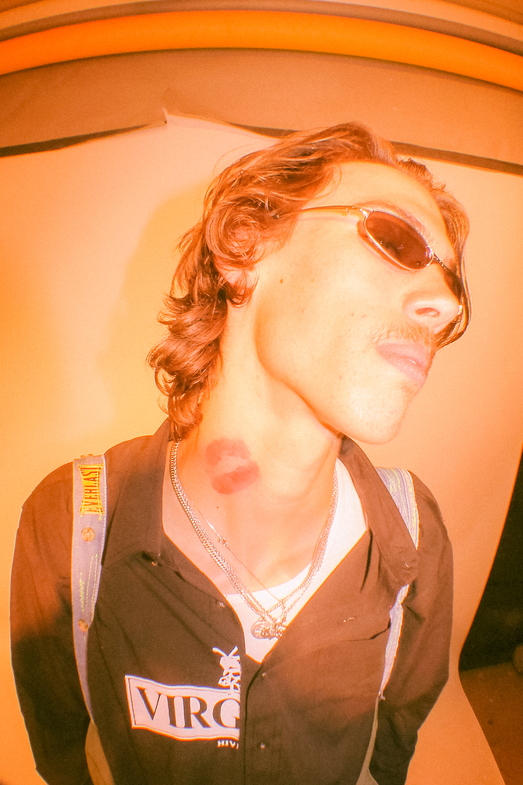
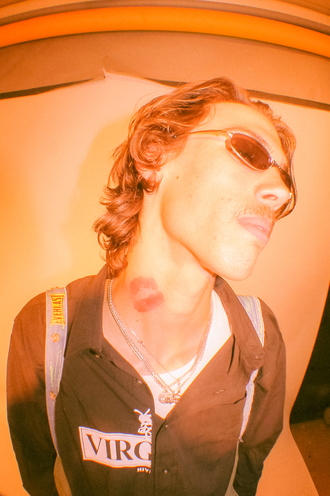
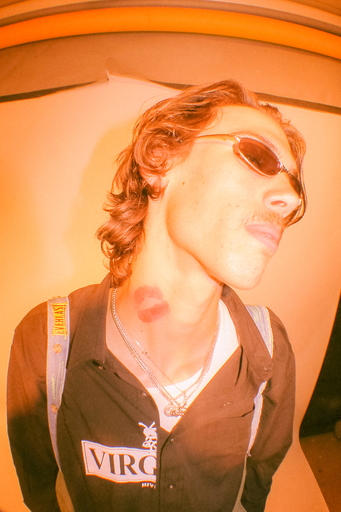

My high school friend Andrew Whitaker makes clothes for his brand,
Virginia Avenue. He makes skate and culture oriented streetwear, usually
from upcycled garments. Andrew screenprints, embroiders, bedazzles, and
repurposes blank and thrifted garments. The style of Andrew's
work can be described as collage-like and street and hip-hop
inspired. He mixes a good amount of high and low end fashion,
having accessibility and the consumer as the forefront of his work.
Virginia Ave had its first runway show debuting a Spring Summer 2022
collection on April 30, 2022. The collection featured 18 looks on
18 models, all friends of Whitaker. Models ranged from local artists,
musicians, engineers, skateboarders, baristas, students and more -
bringing the local Columbia community together. The event was held at
PDM, a local DIY punk venue in Columbia, Missouri.

I took photos throughout the runway production needed for
advertising, behind-the-scenes, and documentation of this exciting event
I got to work on with my friends. The week of the show, I scrambled to
put together a zine that would be sold at the event. My friend Colin
has access to a riso printer and printed (in monochromatic green),
stapled, and assembled 30 physical zines, the day of (just hours before)
the event. Everything was last minute, but I'm glad we to pulled it off.
There was a lot of stuff going on, but most of the zines ended
up getting stolen and taken without payment.
I hope whoever has them now appreciates them!
My friend and talented videographer, Garrett Curry, filmed some bts and footage during the show and put together this cool highlight reel!
Colin and I made some flyers to be distributed online, consisting of different photo assortments and text. This is one I made, modeled after a Helmut Lang ad campaign.
ALL IMAGES SHOT & EDITED BY
BILLIE HUANG